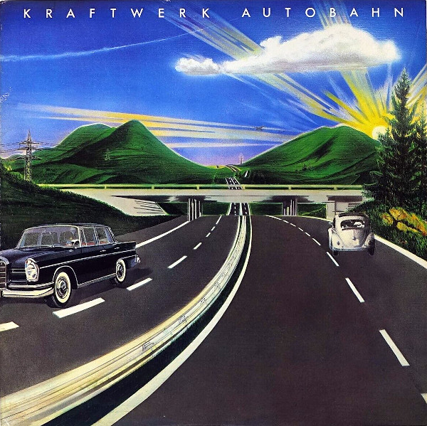

Autobahn
Autobahn, lançado em 1974, é o álbum icônico da banda alemã Kraftwerk, considerado um marco na música eletrônica. Com uma sonoridade minimalista e experimental, o disco mistura rock, eletrônica e krautrock, destacando o uso de sintetizadores e sequenciadores. A faixa-título, com mais de 20 minutos, evoca uma viagem pelas autobahns da Alemanha, criando uma atmosfera de fluidez sonora. O álbum teve grande influência na música eletrônica, especialmente no techno e na música ambiente. Autobahn consolidou Kraftwerk como pioneiros da música digital. É um dos discos mais inovadores e aclamados da história da música eletrônica.
Tracklist
Lado 1: "Autobahn".
Lado 2: "Kometenmelodie 1", "Kometenmelodie 2", "Mitternacht", "Morgenspaziergang".